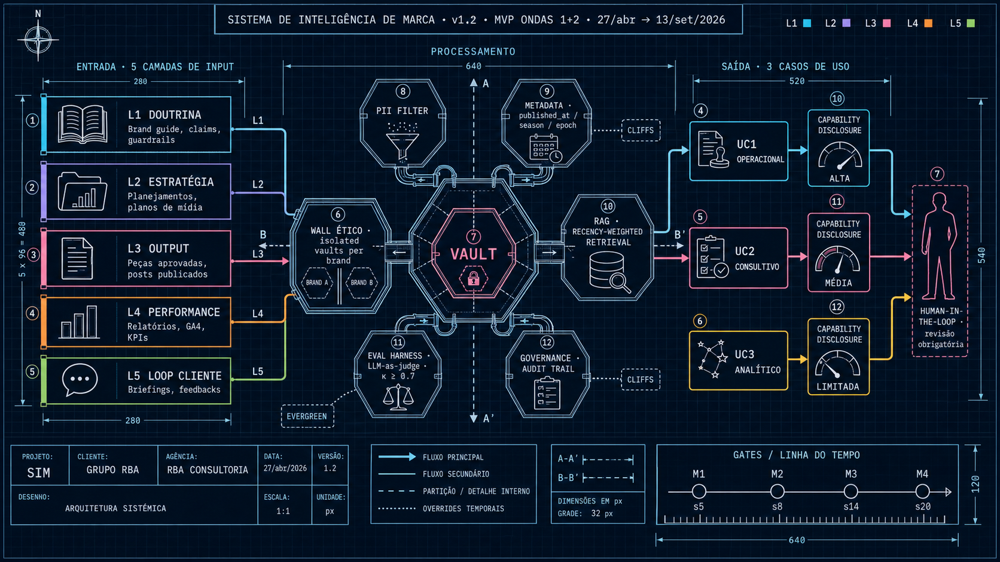

Um vault consultável por IA que unifica voz, tom, visual e estratégia de cada marca, servindo a três casos de uso complementares — operacional, consultivo e analítico — com declaração honesta de confiabilidade baseada nos inputs disponíveis para cada cliente.
Três zonas funcionais. Inputs alimentam o vault em camadas; o motor de processamento aplica retrieval ponderado, governança e eval; outputs saem em três níveis com Capability Disclosure.
Vista única do sistema em estilo drafting. Todos os componentes — entrada, processamento (PII filter, metadata, RAG, governance, eval harness, wall ético) e saída com Capability Disclosure — em uma só composição. Útil como referência consolidada.

Cada camada tem cadência de ingestão, curador e função distintas. L1 é doutrina (raramente muda); L5 é loop com cliente (ingestão recorrente). A combinação L1–L5 determina a confiabilidade que o sistema declara.
O SIM serve a três níveis de output, com inputs requeridos diferentes. A matriz abaixo mostra quais inputs cada caso de uso considera obrigatórios ou apenas desejáveis, determinando a confiabilidade declarada para cada cliente.
Geração e validação de peças/textos. Output passa por revisão humana antes de qualquer envio externo.
Avaliação de propostas estratégicas — planejamentos, campanhas, planos de mídia, pitches. Insumo para debate.
Consulta exploratória sobre o histórico — padrões, sazonalidade, lições, gaps. Insumo para discussão estratégica.
| Input | UC1 · Operacional | UC2 · Consultivo | UC3 · Analítico |
|---|---|---|---|
| L1Brand guide | MUST | nice | nice |
| L1Claims regulados / guardrails | MUST | MUST | nice |
| L2Planejamento atual | nice | MUST | nice |
| L2Planejamentos históricos | — | nice | MUST |
| L2Plano de mídia atual | nice | MUST | nice |
| L2Plano de mídia histórico | — | nice | MUST |
| L3Peças aprovadas | MUST | nice | nice |
| L3Peças rejeitadas | nice | nice | nice |
| L3Posts publicados (corpus) | nice | nice | MUST |
| L4Relatórios social media | — | MUST | MUST |
| L4GA4 / KPIs de funil | — | nice | nice |
| L5Briefings cliente | nice | nice | nice |
| L5Feedbacks aprovação/reprovação | nice | nice | MUST |
Se a fonte preferencial falha (ex: cliente sem API de gestão), o sistema aceita substitutas com peso reduzido.
| Input | Fonte preferencial | Substitutas aceitáveis |
|---|---|---|
| Briefings cliente | API do sistema de gestão100% | Extração mensal manual70% · email anexado60% · ata de reunião50% |
| Feedbacks aprovação/reprovação | API do sistema de gestão100% | Planilha estruturada70% · debrief quinzenal60% · thread email50% |
| Performance social | API Meta + GA4100% | Relatório mensal RBA80% · screenshots Looker60% |
| Posts publicados | Meta Graph API100% | Export CSV mensal90% · scrape público60% |
| Brand guide | PDF oficial assinado100% | Versão de trabalho recente90% · reconstituição via entrevista50% |
| Planejamentos | Documento oficial100% | Deck de apresentação80% · ata de aprovação60% |
Cada tipo de ativo tem uma half-life própria. Brand guides decaem em ~2 anos; social media em ~5 meses; valores fundadores nunca decaem. O caso de uso modula o decaimento — operação privilegia o atual, análise olha pra trás.
Antes de gerar qualquer output dos níveis Consultivo ou Analítico, o sistema declara o que sabe e o que falta. Honestidade epistêmica vira propriedade do produto — três cenários abaixo mostram o comportamento.
O SIM define mecanismos com papéis abstratos; cada cliente preenche a alocação em workshop de onboarding, conforme seu organograma. A coluna lateral mostra a sugestão default para o piloto Harman.
| Papel abstrato | Declarar cliff |
Marcar evergreen |
Ingerir L1 (doutrina) |
Ingerir L3 (peças) |
Anotar golden set |
Mudar pesos MCI |
Aprovar expansão |
Default · Piloto Harman |
|---|---|---|---|---|---|---|---|---|
| aprovador_governança Decisões estruturais | A | A | I | I | I | A | A | Gabriel DaudtHead Planejamento RBA |
| curador_estratégico Cliffs, evergreen, L2/L5 | R | R | C | — | C | C | C | A definirWorkshop com cliente |
| curador_operacional L3, season, campaign | — | — | R | R | C | — | I | CarolRedação/Criação |
| validador_marca Anotação + calibração | C | C | — | C | R | C | — | Maristela + RobertaAtendimento Harman ON/OFF |
| interlocutor_cliente Ponte com cliente final | C | C | C | — | — | — | I | A definirWorkshop com cliente |
Clientes têm organogramas diferentes. O que numa marca é "head de marketing" em outra é "diretor de comunicação" ou "gerente de marca". Definir o framework de governança e deixar a alocação por cliente preserva a integridade do sistema sem impor estrutura. Toda declaração (cliff, evergreen, mudança de papel) registra autor, timestamp e justificativa em audit trail rastreável.
Seis workstreams paralelos · quatro gates de decisão (M1–M4) · janela 27/abr → 13/set/2026. Outcome esperado em M4: SIM operacional na marca-piloto, ≥1 análise consultiva aceita, dashboard de calibração rodando.
| Workstream | s1 | s2 | s3 | s4 | s5 | s6 | s7 | s8 | s9 | s10 | s11 | s12 | s13 | s14 | s15 | s16 | s17 | s18 | s19 | s20 |
|---|---|---|---|---|---|---|---|---|---|---|---|---|---|---|---|---|---|---|---|---|
| AProcurement & Jurídico | ||||||||||||||||||||
| BColeta & Curadoria (5 cam.) | ||||||||||||||||||||
| CArquitetura Técnica | ||||||||||||||||||||
| DEval Harness & Calibração | ||||||||||||||||||||
| EComercial & Adoção | ||||||||||||||||||||
| FIngestão Recorrente novo | ||||||||||||||||||||
| Gates · M1–M4 | ||||||||||||||||||||
Esta visualização sintetiza a v1.2 do plano. O documento completo, com riscos detalhados, auto-crítica e arquivos referenciados, vive no repositório da consultoria.
{kind=link}